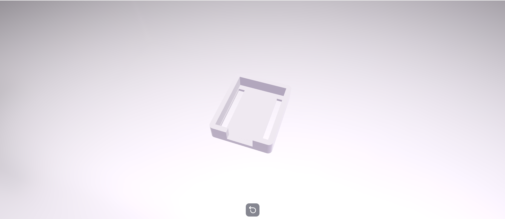

First Design of the ESP32 C3 Zero Case
Prototype 1 was my first attempt at designing a protective case for the ESP32 C3 Zero. The aim was to create a simple enclosure that would protect the board while allowing access to the main components.
This design included a basic rectangular shape with openings for the USB port. It focused on creating a working prototype before making improvements.

After testing Prototype 1, I planned to reduce the overall size, improve the strength of the case, and add ventilation holes to help keep the ESP32 cool.